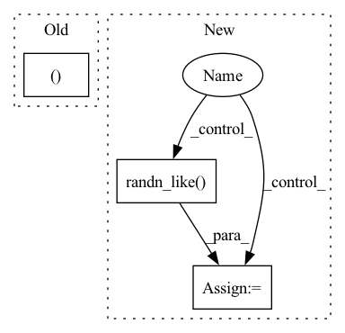

Pattern ID :34648
Before Change
q, diff, _ = self.rvq(z)
return q, diff.mean()
else:
return z, torch.zeros_like(z).mean()
def set_warmed_up(self, state: bool):
state = torch.tensor(int(state), device=self.warmed_up.device)
self.warmed_up = stateAfter Change
else:
diff = torch.zeros_like(z).mean()
if self.noise_augmentation :
z = torch.cat([z, torch.randn_like( z) ], 1)
return z, diff
In pattern: SUPERPATTERN
Frequency: 3
Non-data size: 3
Instances Fragment ID: 99543910
Project Name: caillonantoine/rave
Commit Name: 89dad00587fd1c93af554abf13a265417a9d8982
Time: 2023-02-18
Author: caillonantoine@gmail.com
File Name: rave/blocks.py
M Class Name: DiscreteEncoder
N Class Name: DiscreteEncoder
M Method Name: reparametrize(2)
N Method Name: reparametrize(2)
M Parent Class: nn.Module
N Parent Class: nn.Module
M File Name: rave/blocks.py
N File Name: rave/blocks.py
M Start Line: 635
M End Line: 638
N Start Line: 648
N End Line: 655
Before Change
// x: [B, C_in_out, T]
// nonpadding: [B, 1, T]
// cond: [B, C_g, T]
zs, _ = self.decoder(x=encoded_texts.transpose(1, 2), nonpadding=text_lens, cond=utterance_embedding, infer=False, noise_scale=1.0) // (B, Lmax, adim)
before_outs = self.feat_out(zs).view(zs.size(0), -1, self.odim) // (B, Lmax, odim)
// postnet -> (B, Lmax//r * r, odim)After Change
// forward VAE decoder
target_non_padding_mask = make_non_pad_mask(xs=speech_lens)
if is_inference :
z = self.decoder(cond=encoded_texts.transpose(1, 2),
infer=is_inference) // (B, Lmax, adim)
else:
z, kl_loss, z_p, m_q, logs_q = self.decoder(x=gold_speech,
nonpadding=target_non_padding_mask,
cond=encoded_texts.transpose(1, 2),
infer=is_inference) // (B, Lmax, adim)
if not use_posterior:
z = torch.randn_like( z)
before_outs = self.decoder.decoder(z, nonpadding=speech_lens, cond=encoded_texts).transpose(1, 2)
// forward flow post-net Fragment ID: 99543908
Project Name: digitalphonetics/ims-toucan
Commit Name: 1f6ef3294b6593510f03bf07885afb4754888c42
Time: 2022-11-29
Author: florian.lux@ims.uni-stuttgart.de
File Name: TrainingInterfaces/Text_to_Spectrogram/PortaSpeech/PortaSpeech.py
M Class Name: PortaSpeech
N Class Name: PortaSpeech
M Method Name: _forward(14)
N Method Name: _forward(12)
M Parent Class: torch.nn.Module,ABC
N Parent Class: torch.nn.Module,ABC
M File Name: TrainingInterfaces/Text_to_Spectrogram/PortaSpeech/PortaSpeech.py
N File Name: TrainingInterfaces/Text_to_Spectrogram/PortaSpeech/PortaSpeech.py
M Start Line: 303
M End Line: 309
N Start Line: 258
N End Line: 330
Before Change
beta_t = self.beta_0 + t * (self.beta_1 - self.beta_0)
drift = -0.5 * beta_t * x
diffusion = torch.sqrt(beta_t)
return drift, diffusion
def prior_sampling(self, shape):
return torch.randn(*shape)
After Change
t = batch["t"]
beta_t = self.beta_0 + t * (self.beta_1 - self.beta_0)
diffusion = torch.sqrt(beta_t)
for key in self.irreps.keys():
x = batch[key]
drift = -0.5 * beta_t * x
x_mean = x + drift * dt
z = torch.randn_like( x)
x = x_mean + diffusion * np.sqrt(abs(dt)) * z
batch[key] = x
return batch.to(batch.device)
Fragment ID: 99543906
Project Name: 20171130/equivariant-nn-zoo
Commit Name: ea9c879fc74829feacf3002ec119608020920c8d
Time: 2022-08-04
Author: hangruibi@outlook.com
File Name: e3_layers/run/sde_utils.py
M Class Name: VPSDE
N Class Name: VPSDE
M Method Name: sde(3)
N Method Name: sde(3)
M Parent Class:
N Parent Class: SDE
M File Name: e3_layers/run/sde_utils.py
N File Name: e3_layers/run/sde_utils.py
M Start Line: 62
M End Line: 64
N Start Line: 69
N End Line: 81